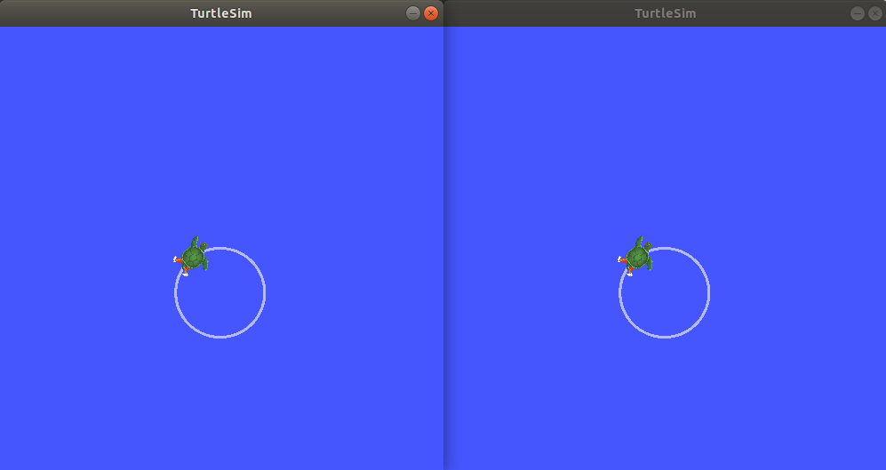

Creating a launch file¶
Goal: Create a launch file to run a complex ROS 2 system.
Tutorial level: Beginner
Time: 10 minutes
Contents
Background¶
In the tutorials up until now, you have been opening new terminals for every new node you run. As you create more complex systems with more and more nodes running simultaneously, opening terminals and reentering configuration details becomes tedious.
Launch files allow you to start up and configure a number of executables containing ROS 2 nodes simultaneously.
Running a single launch file with the ros2 launch command will start up your entire system - all nodes and their configurations - at once.
Prerequisites¶
This tutorial uses the rqt_graph and turtlesim packages.
You will also need to use a text editor of your preference.
As always, don’t forget to source ROS 2 in every new terminal you open.
Tasks¶
1 Setup¶
Create a new directory to store your launch file:
mkdir launch
Create a launch file named turtlesim_mimic_launch.py by entering the following command in the terminal:
Linux
touch turtlesim_mimic_launch.py
macOS
touch turtlesim_mimic_launch.py
Windows
type nul > turtlesim_mimic_launch.py
You can also go into your system’s file directory using the GUI and create a new file that way.
Open the new file in your preferred text editor.
2 Write the launch file¶
Let’s put together a ROS 2 launch file using the turtlesim package and its executables.
Copy and paste the complete code into the turtlesim_mimic_launch.py file:
from launch import LaunchDescription
from launch_ros.actions import Node
def generate_launch_description():
return LaunchDescription([
Node(
package='turtlesim',
node_namespace='turtlesim1',
node_executable='turtlesim_node',
node_name='sim'
),
Node(
package='turtlesim',
node_namespace='turtlesim2',
node_executable='turtlesim_node',
node_name='sim'
),
Node(
package='turtlesim',
node_executable='mimic',
node_name='mimic',
remappings=[
('/input/pose', '/turtlesim1/turtle1/pose'),
('/output/cmd_vel', '/turtlesim2/turtle1/cmd_vel'),
]
)
])
2.1 Examine the launch file¶
These import statements pull in some Python launch modules.
from launch import LaunchDescription
from launch_ros.actions import Node
Next, the launch description itself begins:
def generate_launch_description():
return LaunchDescription([
])
Within the LaunchDescription is a system of three nodes, all from the turtlesim package.
The goal of the system is to launch two turtlesim windows, and have one turtle mimic the movements of the other.
The first two actions in the launch description launch two turtlesim windows:
Node(
package='turtlesim',
node_namespace='turtlesim1',
node_executable='turtlesim_node',
node_name='sim'
),
Node(
package='turtlesim',
node_namespace='turtlesim2',
node_executable='turtlesim_node',
node_name='sim'
),
Note the only difference between the two nodes is their node_namespace values.
Unique namespaces allow the system to start two simulators without node name nor topic name conflicts.
Both turtles in this system receive commands over the same topic and publish their pose over the same topic. Without unique namespaces, there would be no way to distinguish between messages meant for one turtle or the other.
The final node is also from the turtlesim package, but a different executable: mimic.
Node(
package='turtlesim',
node_executable='mimic',
node_name='mimic',
remappings=[
('/input/pose', '/turtlesim1/turtle1/pose'),
('/output/cmd_vel', '/turtlesim2/turtle1/cmd_vel'),
]
)
This node has added configuration details in the form of remappings.
mimic’s /input/pose topic is remapped to /turtlesim1/turtle1/pose and it’s /output/cmd_vel topic to /turtlesim2/turtle1/cmd_vel.
This means mimic will subscribe to /turtlesim1/sim’s pose topic and republish it for /turtlesim2/sim’s velocity command topic to subscribe to.
In other words, turtlesim2 will mimic turtlesim1’s movements.
3 ros2 launch¶
To launch turtlesim_mimic_launch.py, run the following command:
ros2 launch turtlesim_mimic_launch.py
Note
It is possible to launch a launch file directly (as we do above), or provided by a package. When it is provided by a package, the syntax is:
ros2 launch <package_name> <launch_file_name>
You will learn more about creating packages in a later tutorial.
Two turtlesim windows will open, and you will see the following [INFO] messages telling you which nodes your launch file has started:
[INFO] [launch]: Default logging verbosity is set to INFO
[INFO] [turtlesim_node-1]: process started with pid [11714]
[INFO] [turtlesim_node-2]: process started with pid [11715]
[INFO] [mimic-3]: process started with pid [11716]
To see the system in action, run the ros2 topic pub command on the /turtlesim1/turtle1/cmd_vel topic to get the first turtle moving:
ros2 topic pub -r 1 /turtlesim1/turtle1/cmd_vel geometry_msgs/msg/Twist '{linear: {x: 2.0, y: 0.0, z: 0.0}, angular: {x: 0.0, y: 0.0, z: -1.8}}'
You will see both turtles following the same path.

4 Introspect the system with rqt_graph¶
While the system is still running, open a new terminal and run rqt_graph to get a better idea of the relationship between the nodes in your launch file.
Run the command:
rqt_graph

A hidden node (the ros2 topic pub command you ran) is publishing data to the /turtlesim1/turtle1/cmd_vel topic on the left, which the /turtlesim1/sim node is subscribed to.
The rest of the graph shows what was described earlier: mimic is subscribed to /turtlesim1/sim’s pose topic, and publishes to /turtlesim2/sim’s velocity command topic.
Summary¶
Launch files simplify running complex systems with many nodes and specific configuration details.
You can create launch files using Python, and run them using the ros2 launch command.
Next steps¶
In the next tutorial, Recording and playing back data, you’ll learn about another helpful tool, ros2bag.